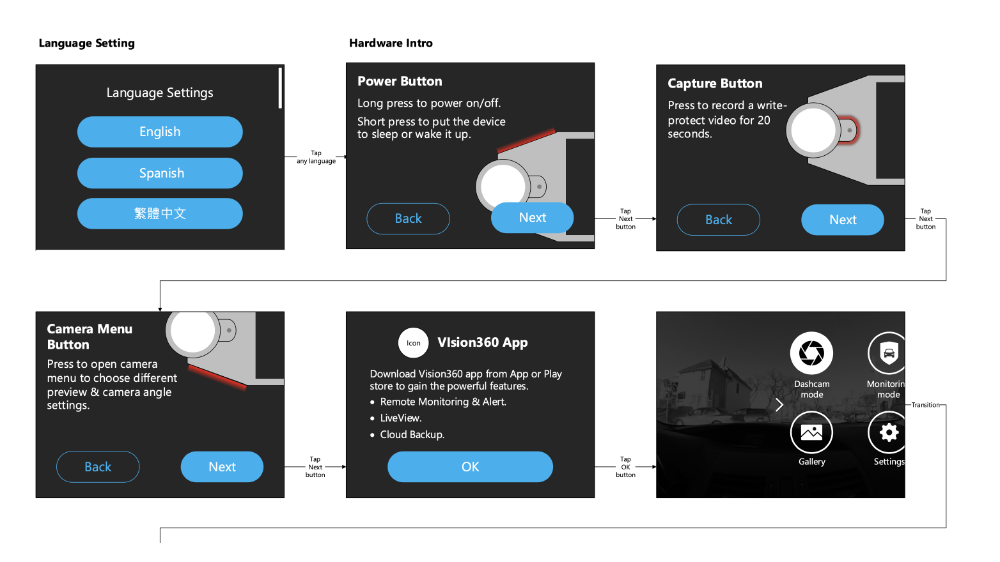

Vision360 雲端行車紀錄器
360度無死角的行車安全守護者
情境 (Situation)
在2018年的行車紀錄器市場中，BD團隊發現傳統產品存在諸多限制，無法滿足現代駕駛者的需求。同時也看到了透過新興技術解決這些問題的機會。這促使我們開發了Vision360，一款整合360度全景攝影、雲端儲存與智能防盜功能的創新行車紀錄器。
主要市場痛點
技術突破機會
透過新興的360度相機技術與雲端服務，我們發現以下改進機會：
任務 (Task)
專案目標
我的工作
行動 (Action)
競品研究結果與設計決策支撐
透過深入分析市場上主要行車紀錄器品牌（包括Garmin、Mio、DOD、Papago等），我們發現關鍵問題：
- Garmin Dash Cam系列：單鏡頭設計僅覆蓋前方140°視角，側面與後方完全無法記錄
- Mio MiVue系列：雙鏡頭設計雖有前後錄影，但左右兩側仍有死角，重要的側面碰撞無法記錄
- DOD LS系列：視角範圍僅120°，無法完整記錄十字路口的複雜交通狀況
- 缺乏即時通訊：多數產品無4G連網功能，無法提供即時警報或遠端監控
- 防盜功能單一：僅提供基本的震動警報，無法追蹤車輛位置或即時通知
- 儲存容量限制：多數產品依賴SD卡，容量有限且容易遺失重要影片
- 資料安全性低：SD卡可能損壞或被竊取，重要證據容易遺失
- 操作複雜度高：Garmin系列需要4-5個步驟才能調整基本設定，學習曲線陡峭
- 情境適應性差：無法根據使用情境自動調整功能配置
解決方案及互動設計
1. 360度錄影模式
當車輛發動時，系統自動進入預設模式，全方位紀錄行車過程：


2. 連網功能
車機聯網後，可以提供更多智能服務：


3. 情境設計(Contextual Design)
根據使用者的當前情境或任務顯示相關的內容或功能，避免不必要的干擾：

第一次使用時提供使用教學

結果 (Result)
專案終止與反思
由於專案涉及多個複雜系統的整合，包括360度全景攝影、4G LTE通訊、雲端儲存、GPS定位等，開發團隊在短時間內無法有效整合這些技術，導致專案在完成雛形後被迫終止。
也讓我開始反思是否產品需要這麼多功能，是否需要簡化產品，讓產品更聚焦於重點情境上。